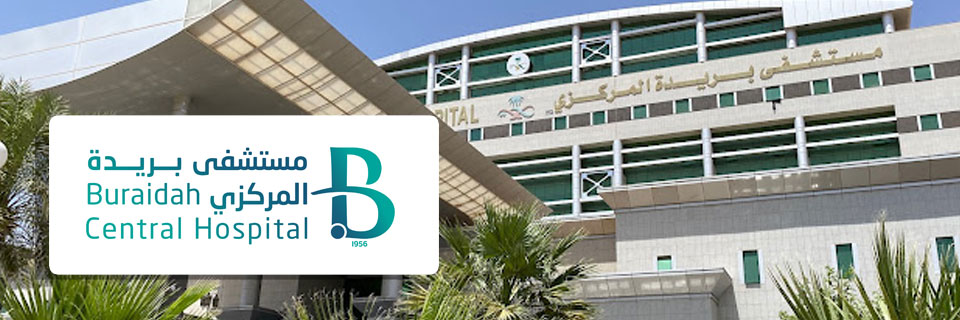
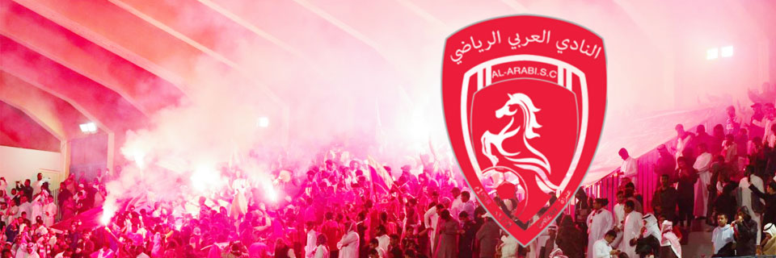
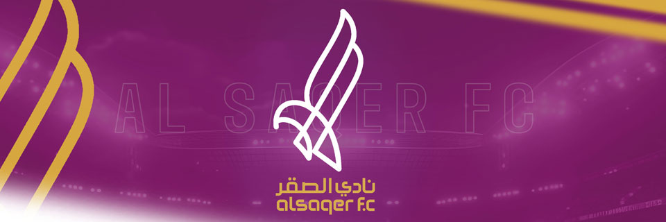
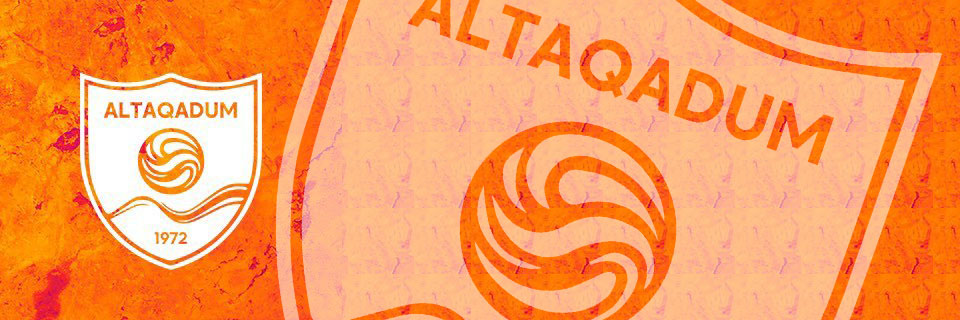
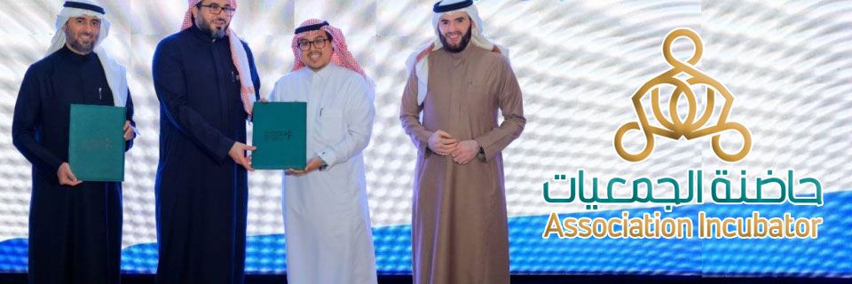
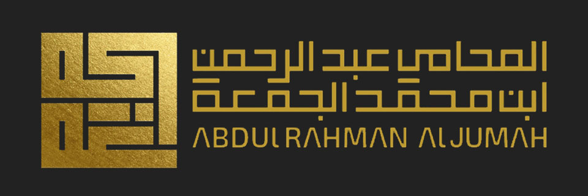

مستشفى بريدة المركزي
صرح طبي عريق بالقصيم منطقة بريده أنجز مستشفى بريدة المركزي أحد مكونات تجمع القصيم الصحي , أكثر من 12 ألف عملية جراحية حتى نهاية الربع الثالث " يناير- سبتمبر" خلال 9 أشهر ، من العام الحالي 2023م ، توزعت على مختلف الأقسام بالمستشفى
اركال للاستشارات الهندسية

أركال للإستشارات الهندسيه المتخصص في تصميم المخططات المعماريه بأحدث الأساليب العصريه وتصميم المخططات الإنشائيه تماشيا مع الأكواد العالميه بالإضافة لجميع الأعمال المساحيه والكروكيات التنظيميه وأعمال مكافحة الحريق والأمن والسلامه.
نادي الرائد الرياضي

رؤيتنا أن نكون ناديًا رائدًا يعزز النمو المستدام في المجال الرياضي محلياً ودولياً ورسالتنا توفير بيئة رياضية محفّزة في مختلف الألعاب الرياضية، وخلق بيئة جاذبة للاستثمار، و تفعيل المسؤولية الاجتماعية، وتعزيز الإستدامة المهنية والمالية وذلك لتحقيق تطلعات الشركاء والتوجهات المستقبلية للمملكة
مخابز وحلويات الأرياف

مخابز وحلويات الأرياف.. 40 عاماً من التميز والنجاح 11 فرعاً حول المملكة تقدم أفضل المنتجات
بدأت قصة شركة مخابر وحلويات الأرياف عام 1985 ميلادي على يد المؤسس رجل الأعمال فهد المحيميد، من حلم إلى كيان عريق يملك خبرة ممتدة ومحفوفة بالعراقة والأصالة، كانت هذه العلامة التجارية شريكة في الكثير من اللحظات السعيدة للمجتمع مما جعل لهذه العلامة ولاء عاليا من قبل عملائها، حتى أصبحت لا تكتمل الأفراح لسنوات طويلة إلا بصحبة منتجات مخابز وحلويات الأرياف، وكان لدى المؤسس الأستاذ فهد المحيميد بعد نظر في استثماره، حيث حرص على أن لا يخدم قطاعاً واحداً فقط، بل قدم منتجات نوعية في قطاعات متعددة مثل:
*
الحلويات الشرقية من الكنافة والبقلاوة وغيرها.
*
الحلويات الغربية من الكيكات الفاخرة، والكثير من الوصفات المبتكرة والمستوحاة من المطبخ الأوروبي وغيرها.
*
الشوكولاتة الفاخرة بأعلى مستوى وألذ حشوة.
*
المعجنات والمقليات الطازجة، والمخبوزات التي هي خيار دائم لأصحاب المنازل.
النادي العربي
النادي العربي الرياضي بعنيزة, في محافظة عنيزة بمنطقة القصيم وسط المملكة العربية السعودية تأسس سنة 1958, ويحمل النادي شعارا باللون الأحمر والأبيض. يُلقب النادي العربي بفارس عنيزة، وهو نادي رياضي يضم العديد من الألعاب الرياضية أبرزها كرة القدم وكرة اليد وكرة السلة. ويقع مقر النادي في محافظة عنيزة بمنطقة القصيم
نادي الصقر
تاسس نادي الصقر عام 1401هـ على يد مجموعة من اهالي مركز البصر وحينها تم ترشيح الاستاذ عبد العزيز بن عبد الرحمن السويد كاول رئيس للنادي, ثم تعاقب على ادارة النادي احد عشر رئيسا كان اخرهم الرئيس الحالي الاستاذ فهد بن عبد العزيز المحيميد.حقق النادي اول بطولاته على مستوى منطقة القصيم العام 1432هـ وفي العام 1442هـ حقق النادي ذات البطولة للمرة الثانية . وفي نفس العام حقق نادي الصقر تاج بطولاتة : درع المملكة العربية السعودية الاندية الدرجة الثالثة, بقيادة رئيس النادي الاستاذ فهد بن عبدالعزيز المحيميد, وعلى اثرها تأهل لاول مرة في تاريخه لدوري الدرجة الثانية لكرة القدم .
نادي السر

نسعى بنادي السر الرياضي للتميز الرياضي والإداري عبر عمل مؤسسي لتحقيق أهدافنا وطموحاتنا التي تلبي تطلعات أصحاب المصلحة.
وأن نكون متميزين في مختلف المجالات الرياضية ونموذجاً في التطوير المؤسسي
التميز روح الفريق الاستدامة الشراكة الشفافية التمكين
ولتحقيق التميز المؤسسي تحسين المنافسة الرياضية تعزيز الاستدامة المالية زيادة مشجعي النادي تحسين البنية تفعيل التكامل و الشراكات المجتمعية
نادي التقدم
كانت بدايات النادي بسيطة باجتهادات ألهالي المذنب في عام 1968م، حيث تولى رئاسته إدارته بداح البداح - رحمه هللا تعالى -حتى جاءت الموافقة الكريمة على اعتماد نادي التقدم الرياضي في محافظة المذنب لممارسة كافة أنشطته الرياضية والثقافية واالجتماعية عام 1972 م ويتولى رئاسة مجلس إدارته عثمان بن محمد الدخيل - رحمه الله تعالى - وتتعاقب بعده اإلدارات لوقتنا الحالي.
حاضنة الجمعيات
حاضنة للجمعيات الأهلية الناشئة هدفها دراسة الاحتياجات بمنطقة القصيم ودعم الافكار ورعايتها ودعم الجمعيات من خلال سبل الاستدامة المالية وتنفيذ افكارها، وحل مشكلة الصعوبات والعوائق التي تواجهها، وكيفية حلها ، ومعرفة الاحتياجات بهدف مساعدتها لتأسيس هذه الجمعية.
كليات عنيزة

تعد كليات عنيزة من الكليات الناشئة في المملكة؛ إذ انطلقت مسيرتها في العام الجامعي 1437/1436 ه بدعم سخي من حكومة خادم الحرمين الشريفين الملك سلمان بن عبدالعزيز آل سعود، وسمو ولي عهده الأمين، حفظهما الله، ورعاية كريمة من وزارة التعليم، تحقيقا للتوجهات المستقبلية للمملكة في مجال التعليم، والبحث العلمي؛ لتوفير تعليم متميز لأبناء المملكة وبناتها في منطقة القصيم
جمعية تجهيز

جمعية خيرية تهتم بشؤون المسلم بعد موته، وتوعية المجتمع بأحكام الجنائز من خلال تقديم عمل خيري متقن للمجتمع من خلال الاهتمام برعاية شؤون الموتى، تجهيزا، وتكفينا، ودفنا، وتدريب وتأهيل المغسلين، وتوعية المجتمع بالمفهوم الشرعي للتعامل مع الجنائز.
مكتب المحامي عبدالرحمن الجمعة
مكتب عبدالرحمن محمد الجمعة محامون ومستشارون وموثقون هو مكتب مرخص له بمزاولة المحاماة بموجب ترخيص المحاماة رقم 39389 وتاريخ 1/7/1439 وترخيص التوثيق رقم 1767 /40 وتاريخ 1/9/1440هـ الصادرين من وزارة العدل بالمملكة العربية السعودية
مكتب القصيم للزواج

مكتب القصيم للزواج القصيم بريده حي السالميه شرق مسجد الجارالله الجامع المكتب له حوالي 16سنه زوج كثير من الرجال على مستوى المملكه دخولك وتعرفك بالمكتب انت بالطريق الصحيح وانتبه لنفسك من المتطفلين على الزواج في برامج التواصل الذينا ليسو مختصين بالزواج وإنما هدفهم اخذ أموال الناس بالباطل المكتب معروف لدى الجميع ومنهم الجهات المختصه .